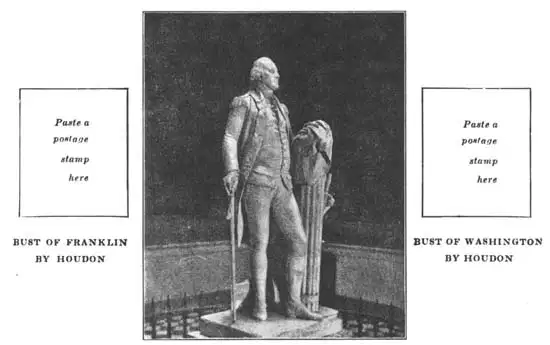

51
ON A POSTAGE STAMP
邮票上的雕像

WHEN I was a boy I collected postage stamps. Now I’m grown up, but I still have the stamps I collected and I still like to get new ones to put in my album.
If you collect stamps I’m sure you have at least one with a side view, or profile, of George Washington’s head. This side view of Washington’s head was first used on postage stamps in 1851. It has been used on almost every issue of ordinary United States postage stamps since then. Sometimes it has been a three-cent stamp, sometimes a two-cent, and sometimes a one-cent stamp that has had this Washington head on it.
All these profile pictures on stamps were made from a bust of Washington. The bust was made from Washington himself at Mount Vernon. It was made by a sculptor who was an expert at making busts that looked like the real people.
This expert was a Frenchman named Jean Antoine Houdon (Oo-donh). You can tell he was a Frenchman just by seeing his name. Houdon was one of the best sculptors France had had for two hundred years. When he was a boy he studied art in Paris and when he was twenty he won a prize for sculpture. The prize gave him enough money to study art in Italy for four years, so he went to Italy. He liked Italy and stayed there ten years instead of four. Then he came back to France.
Houdon said he believed a sculptor should try to make true likenesses of men who had brought glory and honor to their country so that people would always know what these men looked like. Houdon became just as successful at making portrait statues as the Romans had been. Some people think he was even better than the Romans. The most famous statue Houdon made was of a French writer named Voltaire. Voltaire is shown seated in a chair.
Have you ever wondered why so many statues have eyes without pupils? I knew a boy who went through a picture book of sculpture and with a pen put pupils in the eyes of all the statues. He said he didn’t like statues with blank eyes.
One reason the eyes are blank is because the sculptor tried to make the exact shape of the eyes. As you know, there isn’t any hole in the outside material of a real eyeball and so the sculptor felt it would not be right to make a hole in the statue’s eyeball. If a sculptor wanted to show the iris (the colored part) and the pupil (the black center) he painted them on the eyes or put glass or crystal eyeballs in the statue. Carving the eyes without pupils was good sculpture, but it did make the eyes look blank. Michelangelo very lightly carved a circle and dot on his David’s eyes, but most of his other statues have blank eyes.
Now, Houdon thought, just as you probably do, that a portrait statue ought to have eyes with iris and pupil. So Houdon invented a way of his own for doing this. He made a deep hole for the pupil and made the iris in relief. He also left some of the marble for the white part of the eye a little raised so as to catch the light. Houdon’s scheme worked very well. His portrait busts look very much alive. Some of the busts even seem to have a twinkle in their eyes.
When Benjamin Franklin was in France he had his portrait bust made by Houdon. Franklin liked the bust of himself so much that he asked Houdon to come to the new United States to make a statue of George Washington. It took Houdon and Franklin almost two months to sail from France to America and that was a fast trip in 1785. Some of the side views of Franklin on our postage stamps have been taken from Houdon’s bust of Franklin.
Houdon went to Mount Vernon and stayed with Washington until he had made the bust that the postage stamp is copied from. This bust has never left Mount Vernon and you can still see it when you visit the home of Washington. Then Houdon made a full-length marble statue of Washington which is now in the Capitol at Richmond, Virginia. Here is a picture of it.

No.51 GEORGE WASHINGTON（《乔治·华盛顿》）） HOUDON（乌敦 制）
Courtesy of The U University Prints
Besides busts of Voltaire, Franklin, and Washington, Houdon made busts of John Paul Jones, Thomas Jefferson, Lafayette, and many other people—men, women, and children.
And now, even if you are not a stamp collector, you know more about the portrait on one stamp than many stamp collectors know.
【中文阅读】
我小时候就集邮。现在大了，还保留着以前收集的邮票，而且还喜欢收集新票，以充实我的邮册。
如果你也集邮，相信你至少会有一张乔治·华盛顿侧面头像票。华盛顿侧面头像于1851年首次印在邮票上。从那以后，美国的普通邮票几乎每期都发行华盛顿侧面头像票。有时候印在三分邮票上，有时候印在二分邮票上，有时候也印在一分邮票上。
邮票上的这些侧面像是根据华盛顿的一尊半身像绘制而成。这尊半身像刻画的是芒特弗农的华盛顿，作品出自一位擅长制作半身像的雕刻大师。他雕刻的人物看起来都栩栩如生。
这位雕刻大师是法国人，名叫让·安东尼·乌敦。一看他名字，就知道他是法国人。乌敦是过去两百年来法国最优秀的雕刻家之一。乌敦小时候，在巴黎学习艺术。到20岁时就获得雕刻大奖。这个大奖使他有足够的钱到意大利进行为期四年的学习，于是他便动身去了意大利。乌敦非常喜欢意大利。四年学习期满后，他并没有立刻回国，而是在意大利生活了十年，后来才返回法国。
乌敦认为，雕刻家应当竭尽全力将那些为自己国家带来荣誉的人惟妙惟肖地雕刻出来，使普通大众了解他们的长相。在雕刻半身像方面，乌敦做得与古罗马人一样成功。有人甚至认为他做得比罗马人还要好。乌敦最著名的雕像要数他为一个法国作家——伏尔泰刻的雕像。雕像伏尔泰坐在一把椅子上。
有没有疑惑为什么这么多雕像的眼睛没有瞳孔呢？我认识一个孩子，他在浏览一本有关雕像的图画书时，用铅笔给图画书上所有的雕像画了瞳孔。他说他不喜欢这些雕像都眼神空洞。
雕刻家们让雕像没瞳孔，是因为他们想精准地刻画眼睛的形状。众所周知，人的眼球上并没有孔，所以雕刻家们觉得在雕像的眼球上弄个洞并不适合。如果一个雕刻家想要展示虹膜（彩色部分）和瞳孔（黑色部分）的话，他会在眼睛上画虹膜和瞳孔，或者在雕像上放一个玻璃或水晶眼球。眼睛里没有瞳孔的确没错，不过这却使雕像的眼睛看起来空洞无神。米开朗基罗在雕刻《大卫》时，在大卫的眼睛上刻了一个圆圈和一个点，但他的其他的雕像作品几乎都是没有瞳孔的。
乌敦的想法可能和你一样，觉得半身像的眼睛里应该有虹膜和瞳孔。为此，乌敦 发明了一种新的雕刻方法。他将瞳孔雕刻成一个深洞，而将虹膜做成浮雕。他还将用大理石雕刻的眼睛白膜稍稍抬高点，使眼睛接收到光线。乌敦的方法非常奏效，他雕刻的半身像看起来简直活灵活现。有些半身像看起来甚至在向我们眨眼睛呢！
本杰明·富兰克林在法国期间，乌敦为他雕刻了一尊半身像。富兰克林十分喜欢这尊半身像，于是邀请乌敦去新美国，为乔治·华盛顿雕像。经过两个月的航行，乌敦和富兰克林终于到达美国。在当时来说（1785年），这已经算是很快了。我们邮票上的一些富兰克林的侧面像就是根据乌敦为他雕刻的半身像绘制的。
乌敦去了芒特弗农后一直同华盛顿待在一起，直到半身像完成。后来美国邮票上华盛顿的侧面像就是根据这尊半身像复制而来的。华盛顿的这尊像一直存放在芒特弗农。如果去华盛顿故乡参观，就还能看到这尊雕像。后来，乌敦又用大理石为华盛顿雕了一尊全身像，如今这尊全身像收藏在弗吉尼亚州里士满市的国会大厦。见下图。
乌敦除了为伏尔泰、富兰克林和华盛顿制作过半身像外，还替约翰·保罗·琼斯、托马斯·杰斐逊、拉斐特以及其他许多人，包括男女老少，都刻过半身像。
现在，就算不是集邮爱好者，想必你也比一些集邮者更了解邮票上的肖像了吧。